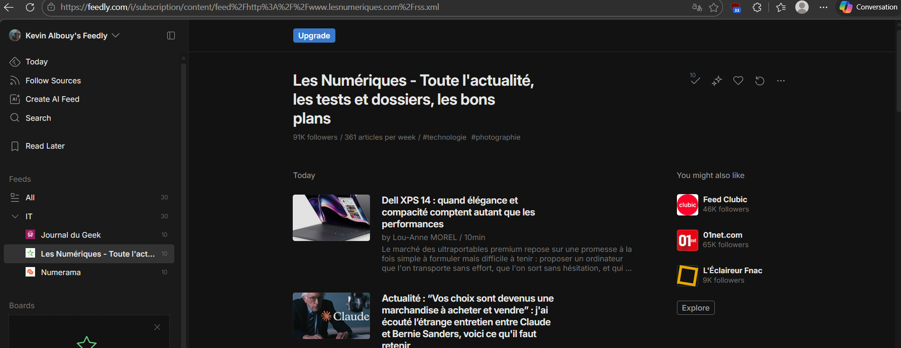

Veille technologique
La veille technologique est essentielle pour rester à jour dans le domaine de l'informatique. Elle permet de découvrir les dernières tendances, outils et technologies qui peuvent influencer notre travail.
Pourquoi la veille technologique est-elle importante ?
Mes sources de veille technologique
Je consulte régulièrement des blogs, des forums, des podcasts et des conférences pour me tenir informé. Voici quelques-unes de mes sources préférées :

Comment je réalise ma veille technologique ?
J'utilise des outils comme Feedly pour centraliser mes sources d'information et organiser ma veille. Je prends également le temps de lire des articles, de regarder des vidéos et d'écouter des podcasts pour approfondir mes connaissances.

Conclusion
La veille technologique est un processus continu qui me permet de rester à jour dans un domaine en constante évolution. En utilisant les bonnes sources et les bons outils, je peux anticiper les changements et adapter mes compétences en conséquence.